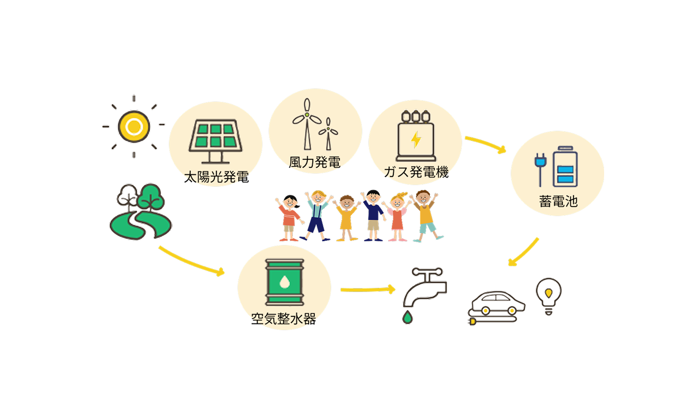
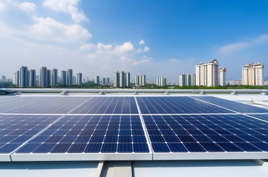
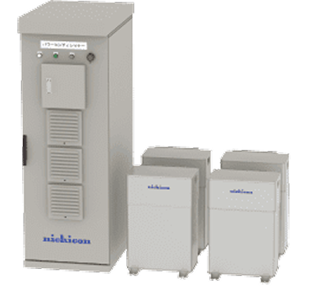
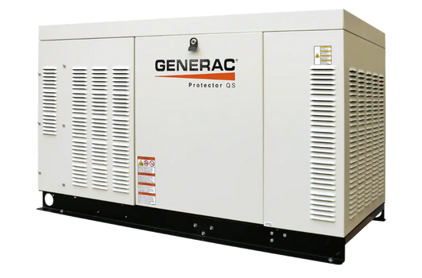
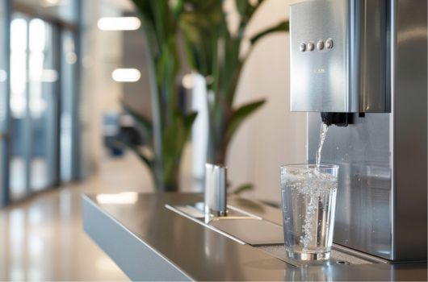
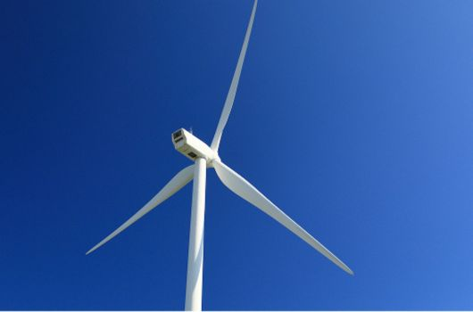

それが、自然エネルギーのチカラ。


太陽光発電は、施設のライフラインを支える重要な設備。
昼間の電力を自然発電でまかない、
停電時も照明・冷蔵・エアコン・福祉機器など最低限の電力を確保。
小規模から大規模まで、目的に応じて発電容量をカスタマイズ可能です。
蓄電池は、災害時に利用者さまの安全を守るための必須アイテム。
照明、ナースコール、エアコン、通信手段、医療機器など、
止められない設備をしっかりバックアップ。
太陽光発電や、ガス発電と組み合わせることで、長時間電力を安定して運用が可能になります。


ガス発電機は、停電時でも安定して電力を確保できる“命を守る設備”。
日常的に使用する介護機器や給湯設備も動かせるため、利用者さまの生活レベルを落とさずに対応できます。
水道や空調などの設備機器も使用可能。
空気整水器は、断水時でも施設内で水を確保できる画期的な設備。
飲み水だけでなく、調理や洗浄、衛生管理にも大きな力を発揮。「水」を常に確保できます。
停電時は蓄電池や発電機と組み合わせて使用でき、災害時の安心感が大きく向上します。
設置も簡単。


風力発電は、太陽光の弱い時間帯でも電力を確保できる心強い設備。
複数の自然エネルギーを組み合わせることで、停電時でも必要な電力を安定的に供給。
施設全体のBCP体制をより強化する役割を持ちます。
施設の規模や用途に合わせて、最適な組み合わせをご提案します
設備や補助金の最適な組み合わせは、施設の規模や入居者数、
電力の使い方によって大きく変わります。
あなたの施設に合う構成を、状況を伺いながら丁寧にご提案します。
BCP対策は「策定したら終わり」ではなく、
実際に使える備えがあってこそ安心につながる…。
停電や断水が“その時”に困らないよう、
今のうちにエネルギーの確保を考えておきませんか？
補助金申請には準備期間が必要です。
まだ導入を決めなくても、「今なにを準備すればいいか」を
知るためのご相談だけでも大歓迎です。